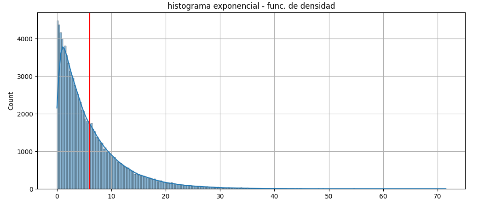
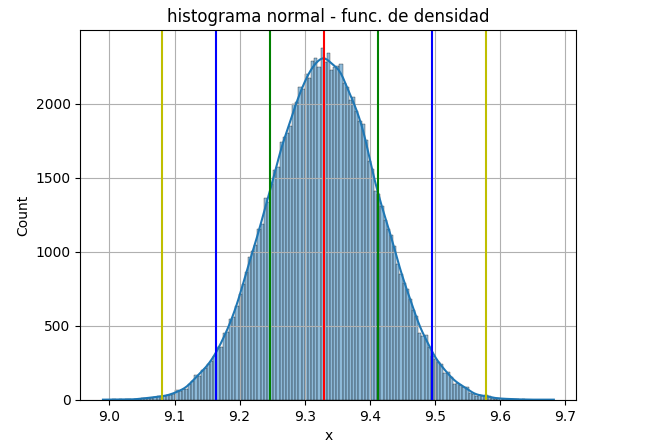
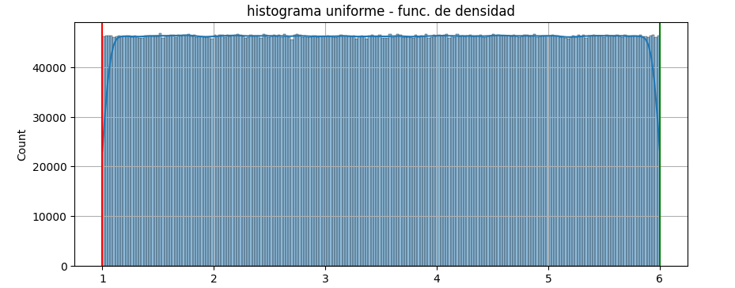

Una simulación de Monte Carlo es un modelo probabilístico que puede incluir un elemento de incertidumbre o aleatoriedad en su predicción. Cuando se utiliza un modelo probabilístico para simular una salida, se obtienen resultados diferentes cada vez.
Las simulaciones de Monte Carlo son una técnica matemática que predice los posibles resultados de un evento incierto. Los programas informáticos utilizan este método para analizar datos pasados y predecir una serie de resultados futuros en función de una elección de acción.
Si desea estimar las ventas del primer mes de un nuevo producto, puede proporcionar al programa de simulación de Monte Carlo los datos históricos de ventas. El programa estimará diferentes valores de venta en función de factores como las condiciones generales del mercado, el precio del producto y el presupuesto de publicidad.
El nombre "Monte Carlo" se le ocurrió a Ulam en referencia al famoso casino de Mónaco, ya que el método implica el uso de números aleatorios, similar a la naturaleza de los juegos de azar.
Las simulaciones de Monte Carlo son importantes porque permiten analizar y entender sistemas complejos y con alto grado de incertidumbre de una manera que otros métodos no pueden.
Las simulaciones de Monte Carlo proporcionan múltiples salidas posibles y la probabilidad de cada una de estas a partir de un gran conjunto de muestras de datos aleatorios. Ofrece un panorama más claro que una previsión determinista. Por ejemplo, prever los riesgos financieros requiere analizar docenas o cientos de factores de riesgo. Los analistas financieros utilizan la simulación de Monte Carlo para obtener la probabilidad de cada resultado posible.
La Simulación de Monte Carlo se usa principalmente cuando:
1. Existe incertidumbre en el problema: Es ideal cuando el problema involucra múltiples variables con incertidumbre o aleatoriedad. Por ejemplo, en finanzas para prever el rendimiento de una inversión bajo diferentes escenarios económicos, o en ingeniería para modelar fallos en sistemas complejos.
2. Es difícil o imposible encontrar una solución determinista: En sistemas complejos con muchas variables y relaciones no lineales, es difícil calcular un resultado exacto. Monte Carlo permite hacer aproximaciones que ayudan a comprender el rango de posibles resultados, como en la predicción del clima o en estudios de riesgo.
3. Se requieren análisis de riesgo y probabilidad: En campos donde se necesita conocer las probabilidades de diferentes resultados (por ejemplo, probabilidad de pérdida o ganancia en finanzas), el método es útil para generar distribuciones de posibles escenarios.
4. Se desea optimizar un proceso o un sistema bajo condiciones inciertas: En la optimización de proyectos de construcción, planes de producción o gestión de inventarios, Monte Carlo ayuda a modelar escenarios de tiempo, costo y recursos bajo variabilidad.
5. Es necesaria la simulación de eventos complejos o de sistemas no lineales: En simulaciones donde las variables interdependen de formas complejas, como en estudios de genética, física de partículas o flujo de tráfico, Monte Carlo permite analizar millones de posibles resultados para inferir patrones o rangos de comportamiento.
1. Finanzas y economía: Se usa para evaluar riesgos en inversiones y para modelar el precio de activos financieros, como acciones y opciones. Permite a los analistas realizar previsiones bajo distintos escenarios económicos y medir el impacto de diferentes variables (como tasas de interés, inflación, volatilidad).
2. Ingeniería y manufactura: Ayuda en el diseño y pruebas de productos, simulando cómo rendirían bajo diferentes condiciones de estrés, temperatura o uso. También se usa en la planificación y optimización de proyectos, considerando posibles retrasos y variaciones en el costo.
3. Ciencias físicas y biológicas: En estas áreas, se utiliza para modelar fenómenos complejos y estudiar sistemas en los que existen incertidumbres, como la física de partículas, la genética o el comportamiento de epidemias.
4. Gestión de proyectos y operaciones: Se emplea para prever la duración de proyectos con incertidumbres en el tiempo y los recursos necesarios, calculando la probabilidad de cumplimiento de plazos y costos.
5. Meteorología y cambio climático: En estos campos, se usa para generar modelos que predicen el comportamiento de fenómenos climáticos complejos, proporcionando proyecciones bajo distintas condiciones.
6. Gaming e inteligencia artificial: En juegos y simulaciones de decisiones, se usa para modelar la toma de decisiones bajo incertidumbre, como en algoritmos de inteligencia artificial que simulan distintos movimientos o estrategias posibles.
Las variables de entrada son valores aleatorios que afectan la salida de la simulación de Monte Carlo. Por ejemplo, la calidad de fabricación y la temperatura son variables de entrada que influyen en la durabilidad de un teléfono inteligente. Las variables de entrada se pueden expresar como un rango de muestras de valores aleatorios de modo que los métodos de Monte Carlo puedan simular los resultados con valores de entrada aleatorios.
La variable de salida es el resultado del análisis de Monte Carlo. Por ejemplo, la vida útil de un dispositivo electrónico es una variable de salida, que se expresa en un valor de tiempo, como 6 meses o 2 años. El software de simulación de Monte Carlo muestra la variable de salida en un histograma o gráfico que distribuye el resultado en un rango continuo en el eje horizontal.
Las distribuciones de probabilidad son funciones estadísticas que representan un rango de valores distribuidos entre límites. Los expertos en estadística utilizan las distribuciones de probabilidad para predecir la posible presencia de una variable incierta, que puede consistir en valores discretos o continuos.
La distribución de probabilidad discreta se representa mediante números enteros o una secuencia de números finitos. Cada uno de los valores discretos tiene una probabilidad mayor que cero. Los especialistas en estadística trazan la distribución de probabilidad discreta en una tabla, pero trazan la distribución de probabilidad continua como una curva entre dos puntos dados en el eje x de un gráfico. Los siguientes son tipos comunes de distribuciones de probabilidad que una simulación de Monte Carlo puede modelar.
La distribución normal, también conocida como curva de campana, tiene forma simétrica de campana y representa la mayoría de los acontecimientos que se producen en la vida real. La posibilidad de un valor aleatorio en la mediana es alta y la probabilidad disminuye significativamente hacia ambos extremos de la curva de campana.
La distribución uniforme se refiere a una representación estadística de variables aleatorias que tienen la misma probabilidad. Cuando se trazan en un gráfico, las variables distribuidas uniformemente aparecen como una línea plana horizontal a través del rango válido. Por ejemplo, la distribución uniforme representa la probabilidad de lanzar y obtener un resultado en cada lado de un dado.
